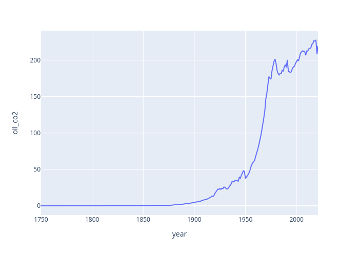
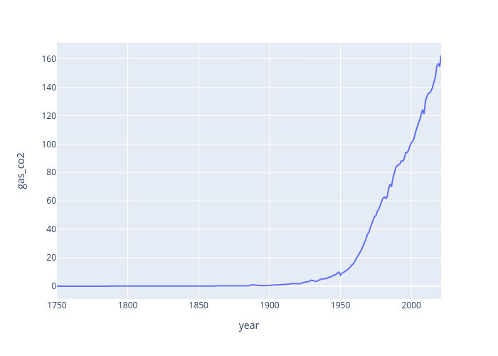
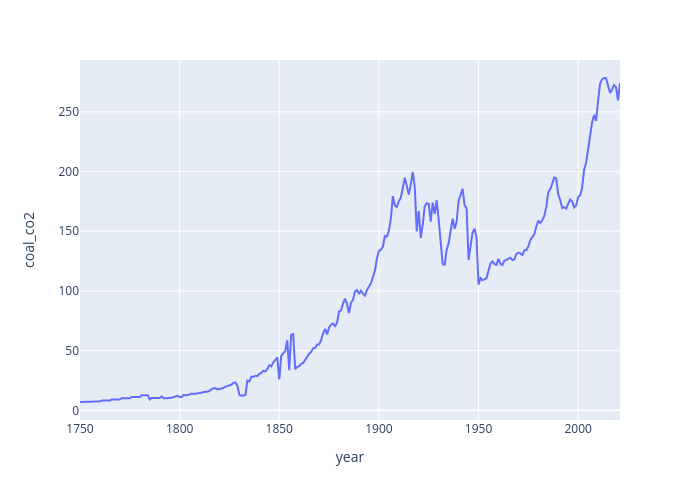

Óleo
A utilização do óleo como fonte de energia começou a se expandir no início do século XX,
com o desenvolvimento da indústria do petróleo e a descoberta de grandes reservas de
petróleo em várias partes do mundo.A crescente dependência do petróleo como fonte de
energia tem levado a questões relacionadas à segurança energética, mudanças climáticas e
a busca por alternativas de energia mais limpa e sustentável

Gás
A utilização do gás como fonte de energia começou a se popularizar primeiramente na
Inglaterra, durante o final do século XVIII, com a invenção do dispositivo de iluminação a
gás por William Murdoch. A partir daí, o uso do gás como fonte de iluminação e energia
espalhou-se rapidamente pela Europa e América do Norte

Carvão
A Inglaterra foi o primeiro país a utilizar o carvão mineral em grande escala durante a
Revolução Industrial, no final do século XVIII. O carvão mineral era utilizado principalmente
para alimentar as máquinas a vapor que impulsionaram a produção industrial e a fabricação
de produtos em larga escala
